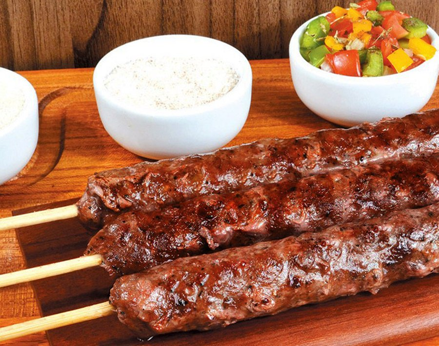

Kafta

Ingredientes 🥄
- 500 gramas de carne moída
- 1 colher de sopa de salsinha picada
- 1 colher de sopa de hortelã picado
- 1 colher de sopa de cebola picada
- 1 colher de chá de alho picado
- 1 colher de chá de pimenta síria
- 2 colheres de chá de sal
- 1 colher de sopa de azeite
- Palitos de churrasco
Modo de Preparo 🥄
- Reúna todos os ingredientes;
- Coloque tudo em uma tigela e misture com as mãos até atingir uma massa uniforme;
- Cubra a tigela com plástico filme, leve-a à geladeira e deixe a massa descansar por meia hora;
- Molde a massa, espete os palitos de churrasco e leve para o congelador por mais 30 minutos;
- Asse as kaftas em uma grelha ou em uma frigideira;
- Vire-as, espere chegar ao ponto que te agrada (mais ou menos passada) e sirva na sequência;